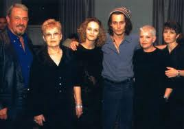
Johnny en su tiempo libre disfruta de la pintura. Ha dibujado la portada del CD de Vanessa Paradis 'Divinidylle' que aparece en el inicio del video L'incendie. También ha pintado al actor Marlon Brando y a Keith Richards, guitarrista de los Rolling Stones. Además, colecciona obras de arte. En enero de 2014 se comprometió con la actriz Amber Heard, con la que comenzó a salir en el año 2012. En febrero de 2015 se casó con la actriz en una ceremonia en su casa en Los Ángeles. El pasado 11 de marzo de 2015, Johnny Depp se tuvo que tomar un descanso de la grabación de Piratas del Caribe 5 después de herirse la mano y viajó de Australia donde se graba Dead Men Tell No Tales a Estados Unidos para someterse a cirugía.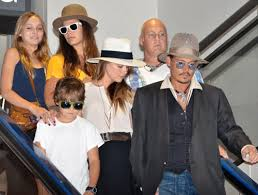
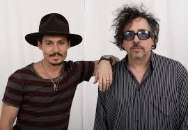
Depp siempre se ha interesado por personajes peculiares, marginados o simplemente diferentes, como Edward Scissorhands, Willy Wonka y Jack Sparrow. El 18 de febrero de 2008, el portavoz del actor Jude Law informó que éste junto con Depp y Colin Farrell sustituirían en las escenas finales al fallecido actor Heath Ledger en la película The Imaginarium of Doctor Parnassus. En 2010 protagonizó The Tourist junto con Angelina Jolie, dirigida por el director ganador de un Óscar Florian Henckel von Donnersmarck. Por su trabajo en el film Johnny ganó un Teen Choice Award, un People's Choice Award y fue nominado a un Globo de Oro. "The Tourist"" ingresó un total de 278.346.189$ en taquilla en todo el mundo, la cuarta mejor película de su carrera, y consolidó al actor como una gran estrella mundial. Johnny interpretó al vampiro Barnabas Collins en Sombras Tenebrosas, la adaptación cinematográfica de una antigua serie de televisión. La película, estrenada en 2012, fue dirigida por Tim Burton. Robert Rodríguez declaró que pretendía contar con Johnny Depp para la secuela de Sin City y retomar el papel del agente de la CIA Sheldon Sands, que interpretó en Once upon a time in Mexico en una nueva película centrada en este personaje. La productora Infinitum Nihil, de la que Johnny Depp es copropietario, ha adquirido los derechos para la adaptación cinematográfica de la novela El manuscrito de Dante, que él protagonizará, según ha informado la revista Variety. Vanity Fair publicó la lista de los Top 40 celebridades de Hollywood con más ingresos a lo largo de 2010 y Depp fue clasificado el número 2 en la lista, con ingresos estimados en $100 millones por sus películas.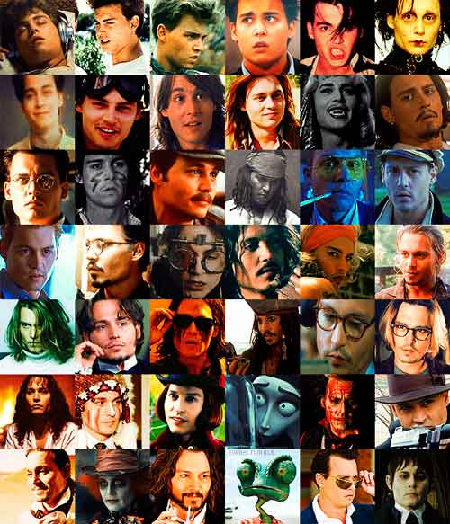
CINE
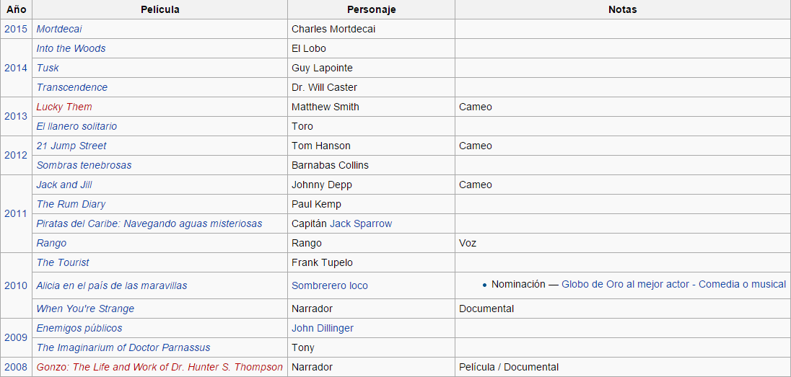 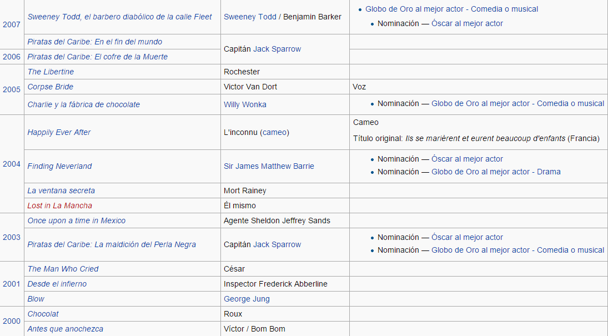 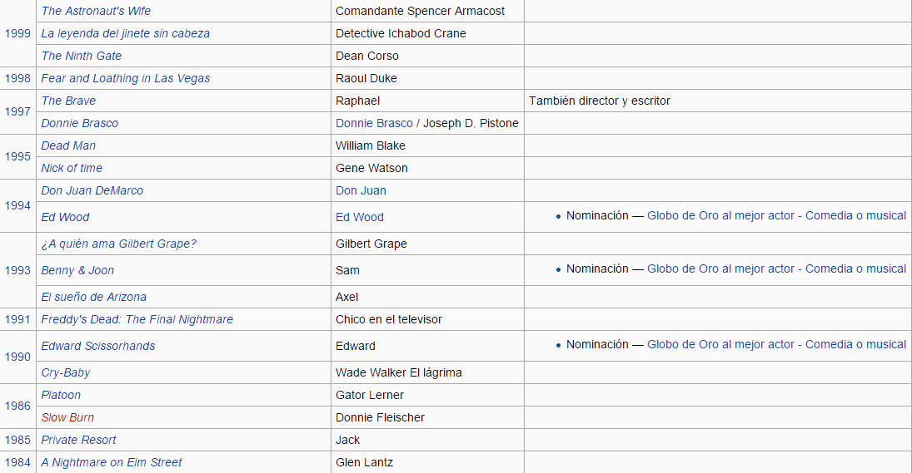TELEVISIÓN
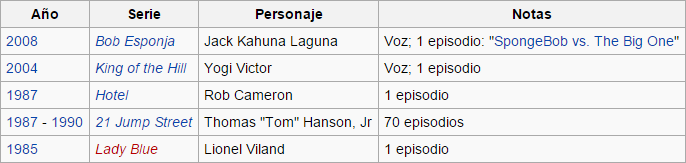PREMIOS ÓSCAR
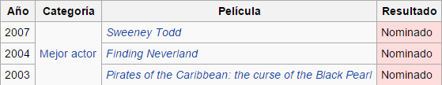PREMIOS GLOBO DE ORO
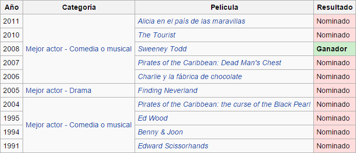PREMIOS BAFTA
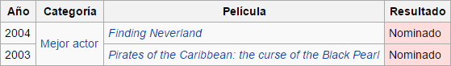PREMIOS DEL SINDICATO DE ACTORES
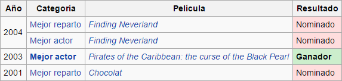PREMIOS CÉSAR
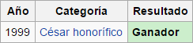PREMIOS TEEN CHOICE
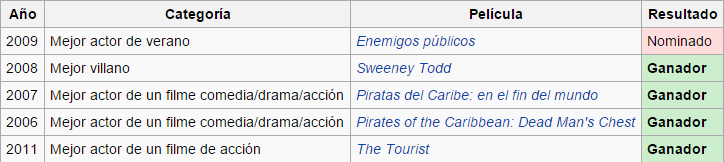OTROS PREMIOS
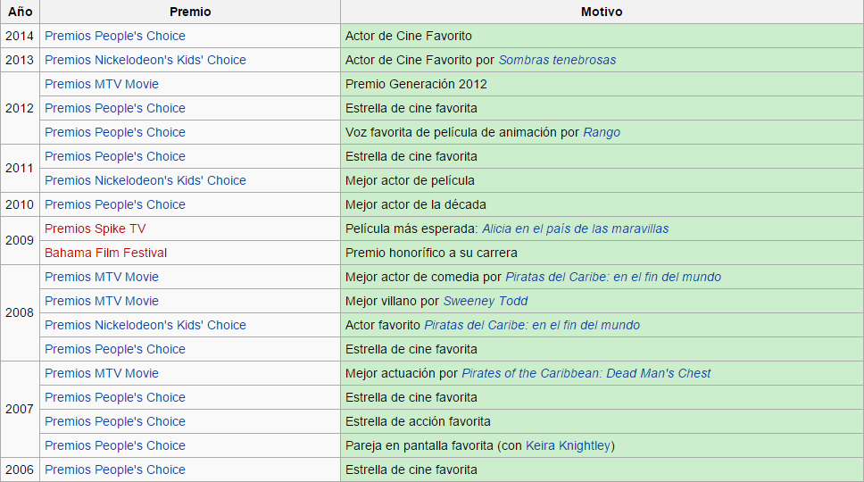 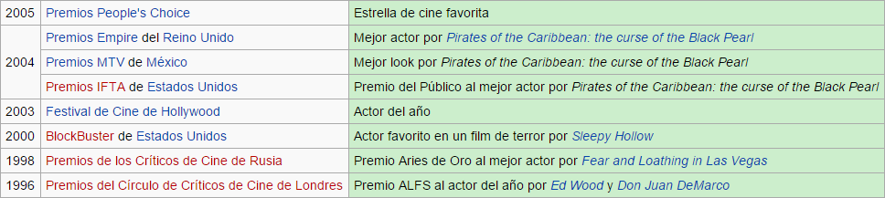